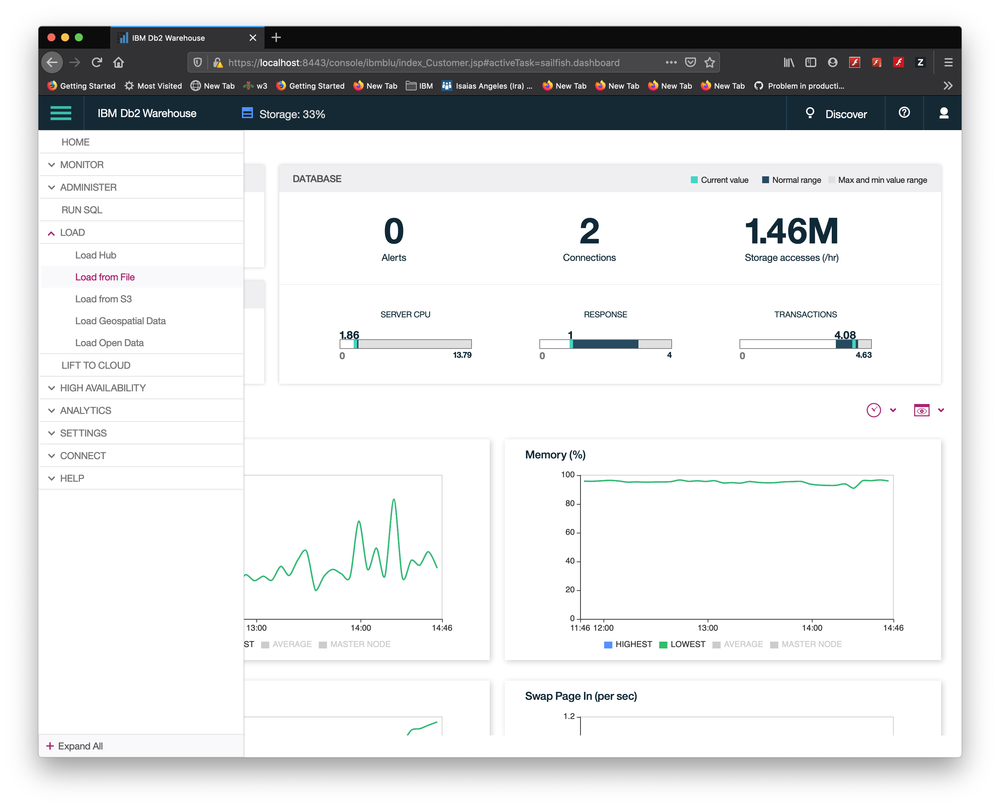
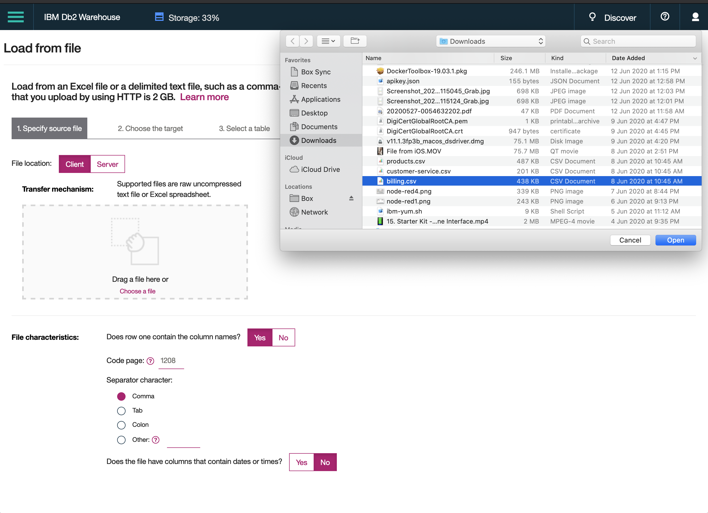
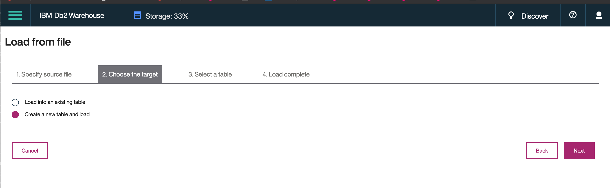
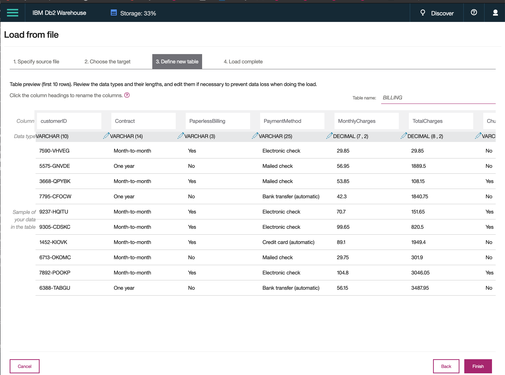
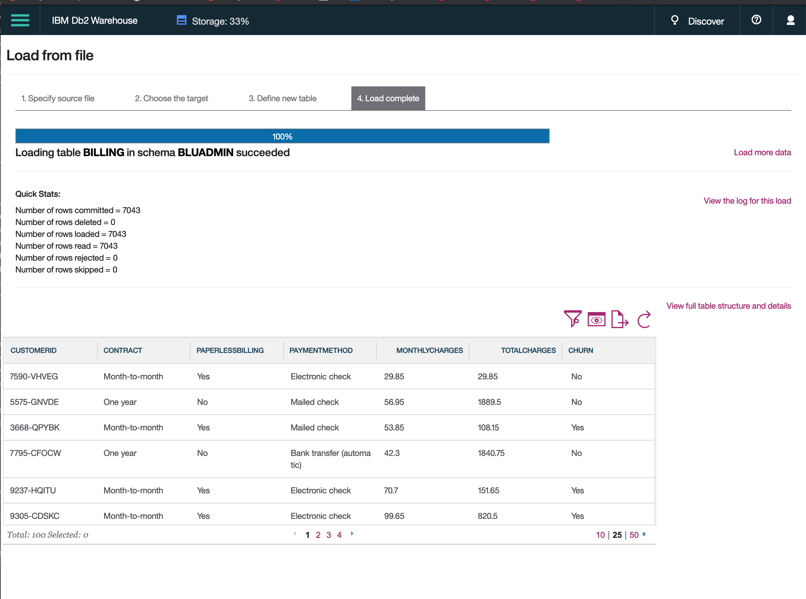
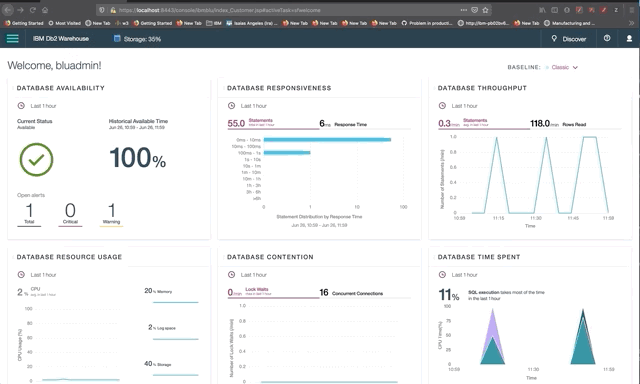

DB2 Warehouse
Load Data
Download the following files from this Github repository:
- billing.csv
- products.csv
- customer-serivce.csv
Select Load from File in the Menu:

Select source billing.csv file

Choose the target, create a new table and load, then click next

Define or verify the suggested table definition, then click Finish

Load complete for billing.csv, click on Load more Data to load products.csv and customer-service.csv, repeating steps 2 to 6.

To run SQL, go to menu -> Run SQL and type the following SQL command:
SELECT CUSTOMERID,CONTRACT,PAPERLESSBILLING,PAYMENTMETHOD,MONTHLYCHARGES,TOTALCHARGES,CHURN FROM BLUADMIN.BILLING;